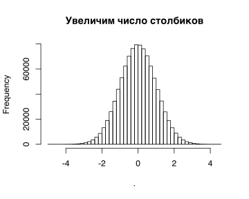

Урок 1 - Нормальное распределение
2019.10.20
library(tidyverse) # много всего полезного (пайплайны и т.п.)
library(magrittr) # еще пайплайны
library(ggpubr) # графики# rnorm - генерация рандомных ([r]andom) значений
rnorm(5)## [1] 0.2512300 -0.3108289 0.6793987 0.5498306 -1.4672843rnorm(60, mean=30, sd=10)## [1] 10.300016 27.841174 42.777354 32.761242 54.683662 24.065130 3.494654
## [8] 30.971801 31.328439 35.540052 17.592068 26.525592 39.505780 38.387440
## [15] 35.672737 30.592195 20.318124 27.249256 16.574389 15.905292 42.962442
## [22] 43.087865 27.670910 33.426698 36.828565 37.869834 21.164575 24.816267
## [29] 42.789099 47.946804 22.787215 48.323028 47.284781 29.956678 26.190894
## [36] 20.198985 32.290915 27.834545 42.406400 20.174384 21.484162 49.730286
## [43] 21.833691 18.331821 10.024324 20.801033 35.828058 32.749831 31.121326
## [50] 19.525165 21.100051 16.270958 29.278848 33.435337 16.362661 20.723689
## [57] 40.554159 43.072512 23.708871 32.912833my_var = 7
rnorm(10, mean=-3, sd=sqrt(my_var))## [1] -4.6216797 -5.9197296 -0.2840198 -2.2294867 -4.8357522 -0.4429413
## [7] -4.0919700 -4.1166102 -1.4764916 -5.89396471e6 == 1000000## [1] TRUErnorm(1e6) %>% hist(main = 'Default settings (frequency = counts)')
rnorm(1e6) %>% hist(freq = T, main = 'Default settings (frequency = counts)')
rnorm(1e6) %>% hist(5, main='Histogram: counts, 5 bins')
rnorm(1e6) %>% hist(5, freq = F, main='Histogram: density, 5 bins')rnorm(1e6, mean=10, sd=2) %>% hist(15, freq = F, main='Histogram: density, 50 bins')rnorm(1e6) %>% hist(1000, freq = F, border=NA, col="gray", main="(Probability) density")
# dnorm - плотность вероятности ([d]ensity)/правдоподобие/likelihood
curve(dnorm(x), from=-4, to=4, add=T, lwd=2)
# берем значения признака Х и смотрим правдоподобия
x_vals = c(-3, -2, -1, 0, 1, 2, 3)
x_vals %>% abline(v = ., col = "red", lty='dashed')
x_vals %>% dnorm() %>% round(3)## [1] 0.004 0.054 0.242 0.399 0.242 0.054 0.004points(x = x_vals,
y = x_vals %>% dnorm(),
col='red', pch=19)# pnorm - вероятность ([p]robability) того, что выборочное значение будет меньше данного значения Х
x_vals = c(-2, 0, 2)
pnorm(x_vals)## [1] 0.02275013 0.50000000 0.97724987pnorm(0) - pnorm(-2)## [1] 0.4772499# qnorm - квантиль ([q]uantile), т.е. такое значение Х, что выборочные значения окажутся меньше его с вероятностью P
# Q: p( x < Q ) = P
P = c(0.25, 0.5, 0.75) # (1:n)/(n+1) - набор из n вероятностей, делящих [0, 1] на равные промежутки
n = 3; (1:n)/(n+1)## [1] 0.25 0.50 0.75n = 9; (1:n)/(n+1)## [1] 0.1 0.2 0.3 0.4 0.5 0.6 0.7 0.8 0.9qnorm((1:n)/(n+1))## [1] -1.2815516 -0.8416212 -0.5244005 -0.2533471 0.0000000 0.2533471
## [7] 0.5244005 0.8416212 1.2815516# quantiles? квантиль - значение признака, такое что...
curve(dnorm(x), from=-4, to=4, lwd=2, main = 'qnorm( 0.25 )', xaxt='none')
axis(1, at = c(-4 , -0.67, 4) , labels = c(expression(-infinity) , -0.67, expression(infinity) ))
qnorm( 0.25 ) %>% abline(v = ., col = "red", lty='dashed')
polygon(c(seq(-4, -0.67, l=100), -0.67, -4),
c(dnorm(seq(-4, -0.67, l=100)), 0, 0), col = scales::alpha('red', .2), border=NA)- тесты на нормальность и интерпретация гистограмм и QQplots
library(tidyverse)
n = 20
qe = log(rnorm(n, exp(5), exp(2))) %>% scale() %>% as.numeric()
qt = qnorm((1:n)/(n+1))
plot(qt, sort(qe), ylim=c(-3,3), type='n')
N = 1000
tl = matrix(nrow=N, ncol=n)
for (i in 1:N) {
tl[i,] = sort(rnorm(n))
if (i %% 20 == 0) points(qt, tl[i,], pch=19, col=scales::alpha('black', .1))
}
ci = apply(tl, 2, function(x) quantile(x, prob = c(0.05, 0.975)))
arrows(qt, ci[1,], qt, ci[2,], length=0.05, angle=90, code=3)
points(qt, sort(rnorm(20)), pch=19)
points(qt, sort(qe), col='red', pch=19)
text(qt+0.07, sort(qe)+0.2, 1:20, col='red', cex=.8)
#ggpubr::ggqqplot(qe)что надо, чтобы проверить ошибки теста Shapiro на разного размера выборках
x = rnorm(20, mean = 5, sd = .22) # генерим случайную выборку из 20 элементов
# а как сгенерить выборку из 30 элементов? И с дисперсией 9? (какое тогда стандартное отклонение)
x # смотрим, что получилось
x %>% hist() # гистограмма
shapiro.test(x) # результаты теста (распечатка)
shapiro.test(x) %>% str() # структура самого объекта с результатами - список!
# как достать из данного списка объект p.value?
#p.value = shapiro.test(x)?????????????
p.value < 0.05 # результат сравнения с критическим значением
my_result = p.value < 0.05 # можно записать этот результат в объект
my_result_vector = numeric(3) # или в список результатов
my_result_vector[1] = p.value < 0.05
my_result_vector
y = rnorm(20, mean = exp(5), sd = exp(3.5)) %>% abs() %>% log() # пример очень не нормальной выборкиlibrary(tidyverse)
# проверяем нормальность отдельно взятой симуляции
set.seed(1)
my_normal_sample = rnorm(20, 5, .22)
my_normal_sample %>% hist()
shapiro.test(my_normal_sample)
set.seed(1)
my_not_normal_sample = log(abs(rnorm(20, exp(5), exp(3.5))))
my_not_normal_sample %>% hist()
shapiro.test(my_not_normal_sample)
# сравниваем мощность и специфичность при разных размерах выборки
N = exp(seq(log(3), log(300), .05)) %>% round() %>% unique() # размер выборки
normal_results = numeric(length(N))
not_normal_results = numeric(length(N))
n_replicas = 200 # повторов для каждого размера, чтобы определить мощность
for (i in 1:length(N)){
for (j in 1:n_replicas){
normal_results[i] = normal_results[i] + (shapiro.test(rnorm(N[i], 5, .22))$p.value < 0.05)
not_normal_results[i] = not_normal_results[i] + (shapiro.test(log(abs(rnorm(N[i], exp(5), exp(3.5)))))$p.value > 0.05)
}
}
plot(N, normal_results/n_replicas, col='blue', ylim=c(0,1), ylab='Error rate')
points(N, not_normal_results/n_replicas, col='magenta')
abline(h=0.05, col='red', lty='dashed')
legend("topright", c('FP: not normal, but called normal', 'FN: normal, but called not normal'), col = c('magenta', 'blue'), pch=c(1,1))- гистограммы и плотность вероятности, вероятность и правдоподобие
\[ Var = \frac{\sum(y_i-\bar{y})^2}{n-1} \]